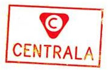

CENTRALA tworzy spektakle - aktualne i nowatorskie dzieła, wykraczające poza normy pod względem treści, estetyki oraz relacji produkcji. CENTRALA działa w sektorze prywatnym, ale ma misję publiczną. Spektakle CENTRALI można zobaczyć na scenach współpracujących z nią instytucji oraz na festiwalach.
CENTRALĘ tworzą ludzie, którzy chcą budować nowe jakości. Zamiast walczyć ze skamieniałymi strukturami, tworzą coś odrębnego.
CENTRALA współpracuje z instytucjami publicznymi i prywatnymi, znajdując sposoby, by elastycznie wykorzystać zasoby różnych podmiotów w procesie tworzenia sztuki. Jej partnerami są: Muzeum Sztuki Nowoczesnej, Nowy Teatr w Warszawie, Muzeum Historii Żydów Polskich, Teatr Polski we Wrocławiu, Sinfonietta Cracovia, Muzeum Powstania Warszawskiego, Teatr Nowy w Łodzi, Teatr Powszechny w Warszawie.
CENTRALA rozumie, że kontekst determinuje sens. Rama jest tak samo ważna jak obraz i nie ma sensu pokazywać nowych obrazów w starych ramach. CENTRALA wymyśla nie tylko nowe obrazy, dźwięki i myśli, ale też nowe konteksty instytucjonalne i ekonomiczne. Tworząc nową sztukę, stwarza nowy typ instytucji - elastyczny, zorientowany na projekty a nie na biurokrację.
CENTRALA jest przejrzysta i niezależna. CENTRALA pragnie naruszać hierarchie, tworzyć nowe pojęcia, wzbudzać niepokój i dawać przyjemność. CENTRALA produkuje spektakle ambitne a zarazem popularne; demokratyczne a jednocześnie krytyczne.
Formalnie CENTRALA jest wspólną inicjatywą dwóch firm: Andergrand Media + Spektakle oraz Agencji Artystycznej GAP. Powstała z inicjatywy Michała Zadary.
